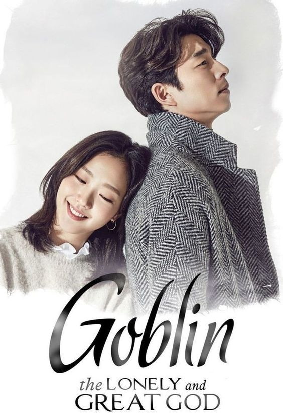
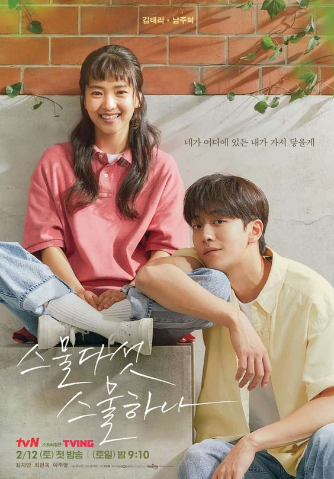

- Goblin
 - Moon Lovers:Scarlet Heart Ryeo

- 2521

Drakor ini menceritakan seorang jenderal pada masa Dinasti Goryeo bernama Kim Shin.
Raja muda yang merasa iri dengan kemampuan Kim Shin lantas menjebak dan membunuhnya.
Oleh Dewa, Kim Shin dikutuk menjadi Goblin dengan kehidupan abadi.
Ada seorang wanita yang sudah enggan hidup karena dikejar-kejar rentenir
padahal yang berhutang adalah pacarnya, yang ternyata berselingkuh.
Namanya adalah Go Ha Jin (diperankan oleh Lee Ji Eun—IU).
Dia bertemu dengan seorang gelandangan dan curhat padanya,
namun pria tersebut malah mengatakan sesuatu yang membingungkan.
Di saat mimpi tampak tidak mungkin dapat diraih,
seorang pemain anggar remaja mengejar ambisi besar dan bertemu
dengan seorang pemuda pekerja keras yang berusaha membangun kembali hidupnya.
Pada usia 22 dan 18 tahun, mereka mengucapkan nama satu sama lain untuk pertama kalinya,
dan pada usia 25 dan 21 tahun, mereka jatuh cinta.